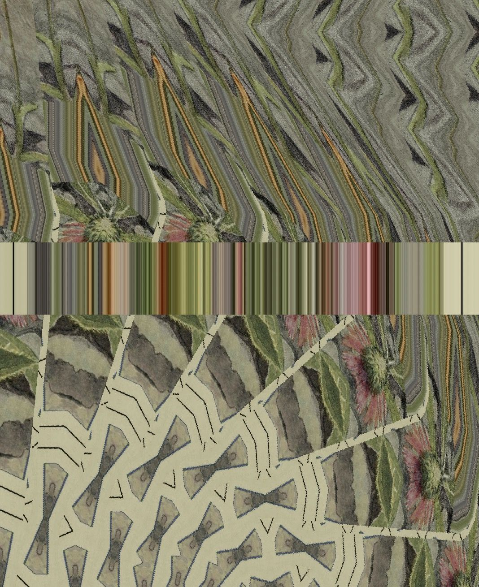

Batman-adv (Better Approach To Mobile Adhoc Networking - advanced) is a protocol used to create ad hoc mesh networks among multiple points. It's often used in situations where you need to establish a network in a challenging environment, like in remote areas.
To use batman-adv to send updates of `releaf.site's` archive to remote access points, you'd need to follow these general steps:
1. **Set up Batman-adv**: Install batman-adv on all the devices you intend to use in your mesh network. This could involve downloading the batman-adv kernel module or patching your Linux kernel with batman-adv. The installation method can vary depending on the Linux distribution.
2. **Configure Network Interfaces**: Assign network interfaces that will be used by batman-adv. Use the `batctl` command to do this.
```
sudo batctl if add wlan0
sudo ifconfig bat0 up
```
3. **Establish the Mesh Network**: Once batman-adv is set up, it will automatically create a mesh network between all devices where it's enabled.
4. **Deploy Archive Updates**: Once your mesh network is established, you can start deploying updates of the `releaf.site` archive to the remote access points. This can be done using rsync, scp or any file transfer protocol. For example, using rsync:
```
rsync -avz /path/to/releaf.site/archive user@remote:/path/to/destination
```
Remember that every mesh node would need a way to access the archive (like an HTTP server), or the archive must be replicated to each node. The specifics can vary based on the details of your infrastructure and use case.
Also, note that the performance of the network will depend on the environment and the configuration of the devices. Be prepared to troubleshoot connectivity issues and experiment with different configurations to optimize performance.
For the most accurate information, you should refer to the official batman-adv documentation and resources related to your specific Linux distribution.
To install batman-adv on Ubuntu, you would need to install the batctl package which provides the B.A.T.M.A.N. advanced control utility. The batman-adv kernel module is typically included in the default Linux kernel shipped with modern Ubuntu versions.
Here are the steps you need to follow:
1. **Update your package list**:
```bash
sudo apt-get update
```
2. **Install the batctl package**:
```bash
sudo apt-get install batctl
```
3. **Check if the batman-adv module is loaded**:
```bash
lsmod | grep batman
```
If `batman_adv` is listed in the output, then the module is already loaded. If not, proceed to the next step.
4. **Load the batman-adv module**:
```bash
sudo modprobe batman-adv
```
You can check again using `lsmod | grep batman` to make sure the module is now loaded.
5. **To ensure batman-adv starts on boot**, add `batman-adv` to `/etc/modules`.
You can do this using the following command:
```bash
echo 'batman-adv' | sudo tee -a /etc/modules
```
Remember that configuring batman-adv involves more than just installing it - you also need to configure network interfaces, establish the mesh network, and so on. Always refer to the latest batman-adv documentation for the most accurate and detailed information.
|  |